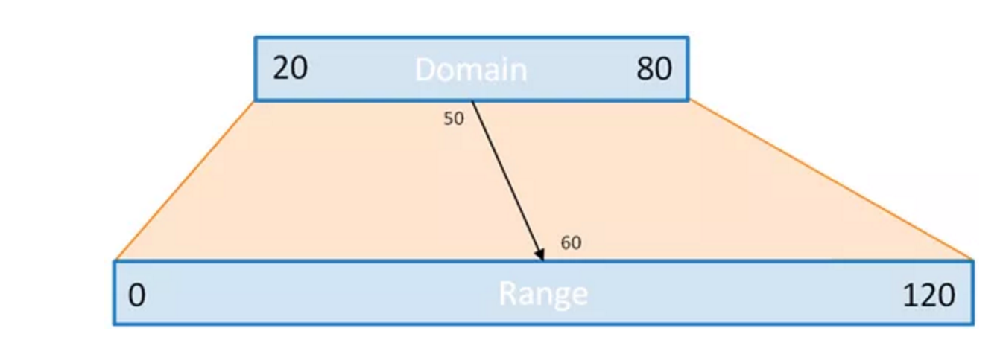

D3 Scales
Scales in D3 provide a way to convert from out data as numbers or string names to pixel locations to help use place objects on our svg.
Typically, we'll have our size and margin setup as follows:
const size = {width: 600,height: 400}const margin = {top: 10,left: 10,bottom: 10,right: 10}
And suppose we have the following data:
console.log(data)// the data:// [// { val: 1, year: 2001 },// { val: 3, year: 2006 },// { val: 5, year: 2011 },// { val: 1, year: 2016 },// ]
One function that will be helpful in setting out our scales is the max function.
import { max } from "d3-array";max(data, d => d.val) // 5
The first argument of max is an array and the second is a function that is applied to each element in the array to get the specific value we want. The max function then returns the greatest of the values returned in the passed in function.
In the code below, we setup a y scale. Often, we'll want the y axis to start at zero and go up to include the greatest value. We can do this by specifying the domain to be [0, maxValue] where we use the max function to calculate that maximum value.
import { scaleLinear } from "d3-array";const y = scaleLinear().domain([0, max(data, d => d.val)]).range([size.height - margin.bottom, margin.top])
ScaleLinear creates a line to transform values in the domain to values in the range.
We'll want the y scale to be increasing going up, so the 0 value should correspond to the bottom of the svg, i.e. size.height - margin.bottom where the max value should correspond to the top of the svg, i.e. margin.top, which are passed into the range.
Similarly, we'll want to create an x scale but this time not start at 0. We can use extent to help us find our domain.
import { extent } from "d3-array";extent(data, d => d.year) // [2001, 2016]
Extent is similar to max, but returns an array of the min and max value: [min, max] and is useful especially when creating an x scale.
const x = scaleLinear().domain(extent(data, d => d.year)).range([margin.left, size.width - margin.right])
If you're ever doing a calculation inside of the .domain or .range, and the scale isn't working properly, you can check what the values as follows, console.log(x.domain(), x.range()). Calling these functions with no values returns the current domain and range.
Now, x and y are just functions that take in values in their domain and returns the pixel location on the svg where to place our elements. For example,
x(2001) // 10, the margin.left value